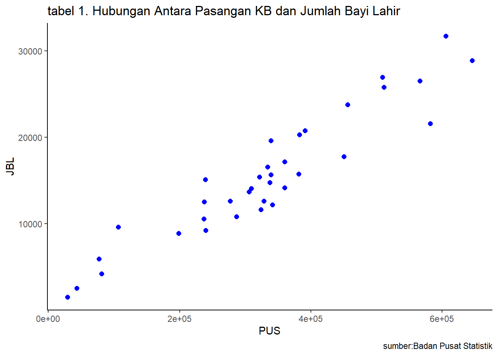

library("ggplot2")
library("readxl")
library("writexl")Pengaruh Pasangan Usia Subur (PUS) Peserta Keluarga Berencana (KB) Dengan Jumlah Bayi Lahir Menurut Kabupaten/Kota di Provinsi Jawa Tengah Tahun 2019
Metode Penelitian Politeknik APP Jakarta

1 Pendahuluan
1.1 Latar belakang
Provinsi Jawa Tengah, sebagai salah satu provinsi dengan populasi yang signifikan di Indonesia, memiliki permasalahan terkait pertumbuhan penduduk yang perlu dikelola secara efektif. Peningkatan jumlah penduduk dapat berdampak pada berbagai aspek pembangunan, termasuk ekonomi dan kesejahteraan masyarakat. Program Keluarga Berencana (KB) menjadi instrumen penting dalam upaya pemerintah untuk mengendalikan pertumbuhan penduduk dan meningkatkan kesejahteraan keluarga. Kesadaran dan partisipasi aktif Pasangan Usia Subur (PUS) dalam program ini memiliki dampak langsung pada keberhasilan implementasinya. Meskipun program KB telah diterapkan secara luas, masih ada tantangan yang dihadapi dalam memotivasi Pasangan Usia Subur untuk aktif terlibat. Faktor-faktor seperti edukasi, aksesibilitas layanan kesehatan, dan norma sosial dapat mempengaruhi tingkat partisipasi PUS.
Provinsi Jawa Tengah terdiri dari berbagai Kabupaten/Kota dengan karakteristik demografis dan sosioekonomi yang berbeda. Variasi ini dapat tercermin dalam jumlah bayi yang lahir di setiap wilayah. Analisis perbandingan dapat memberikan wawasan yang mendalam terkait faktor-faktor yang memengaruhi jumlah kelahiran.Penelitian ini fokus pada tahun 2019 untuk memberikan gambaran terkini dan relevan mengenai keadaan demografis di Provinsi Jawa Tengah. Data tahun tersebut memberikan informasi untuk memahami dinamika program KB dan kelahiran di tingkat lokal. Upaya pengendalian pertumbuhan penduduk melalui program KB sejalan dengan tujuan pembangunan berkelanjutan. Dengan mengevaluasi pengaruh partisipasi PUS terhadap jumlah bayi lahir, penelitian ini memiliki implikasi penting untuk pencapaian tujuan pembangunan berkelanjutan di Provinsi Jawa Tengah.
1.2 Ruang lingkup
Dalam Penelitian Penelitian ini penulis mengambil objek penelitian dari Badan Pusat Statistik (BPS) Jawa Tengah. Ruang lingkup penelitian ini terdapat 2 variabel diantaranya Pasangan Usia Subur (PSU) peserta Keluarga Berencana (KB) Jawa Tengah dan Jumlah bayi lahir di Jawa Tengah menurut kabupaten/kota Jawa Tengah. Batasan masalah ini berperan membantu dalam mengidentifikasi masalah yang akan dibahas dan membatasi jangkauan proses yang dibahas.
1.3 Rumusan masalah
Berdasarkan uraian latar belakang diatas maka yang menjadi masalah pokok pada penelitian ini adalah:
Apakah adanya pengaruh Jumlah Pasangan Usia Subur Peserta KB terhadap Jumlah Angka Kelahiran Bayi?
Apakah Jumlah Pasangan Usia Subur Peserta KB berpengaruh besar terhadap Jumlah Angka Kelahiran Bayi?
1.4 Tujuan dan manfaat penelitian
Berdasarkan latar belakang dan permasalahan yang ada maka tujuan dari penelitian ini adalah untuk mengetahui bagaimana pengaruh Jumlah Pasangan Usia Subur Peserta KB terhadap Jumlah angka Kelahiran Bayi dan mengetahui apakah Jumlah Pasangan Usia Subur Peserta KB berpengaruh besar terhadap Jumlah Angka Kelahiran Bayi.
Adapun manfaat dari penelitian dari penelitian ini antara lain:
Manfaat Teoritis
Penelitian ini dapat membantu untuk mengonfirmasi atau memahami lebih dalam teori-teori yang sudah ada mengenai partisipasi Pasangan Usia Subur (PUS) dalam program KB dan dampaknya terhadap jumlah kelahiran bayi. Selai itu, temuan penelitian ini dapat menjadi landasan untuk penelitian selanjutnya dalam bidang yang sama atau terkait. Peneliti lain dapat menggunakan hasil ini sebagai dasar untuk mengembangkan penelitian lebih lanjut.
Manfaat Praktis
Bagi Penulis
Diharapkan penelitian ini bisa menjadi referensi bagi mereka yang ingin memperdalam pengetahuan terkait dengan kebijakan Keluarga Berencana (KB), demografi, dan kesejahteraan keluarga. Penelitian ini dapat memperluas pemahaman penulis tentang isu-isu kesehatan reproduksi dan dinamika populasi.
Bagi Masyarakat
Informasi dari penelitian ini dapat digunakan untuk memberdayakan pasangan usia subur dengan memberikan pemahaman yang lebih baik tentang dampak partisipasi mereka dalam program KB terhadap jumlah kelahiran bayi. Ini dapat memotivasi mereka untuk terlibat secara aktif dalam program tersebut.
Instansi Pelayanan Kesehatan Reproduksi
Sebagai Bahan masukan dan saran untuk meningkatkan pelayanan kesehatan reproduksi yang ditawarkan kepada pasangan usia subur. Ini dapat mencakup peningkatan aksesibilitas, diversifikasi metode kontrasepsi, dan peningkatan pemahaman mengenai pilihan yang tersedia khususnya di daerah Jawa Timur.
1.5 Package
Packages yang digunakan sebagai penunjang penelitian berikut adalah:
2 Studi pustaka
Pasangan Usia Subur (PUS)
Indonesia merupakan negara yang mempunyai jumlah pendudukan yang sangat tinggi. Salah satu upaya pemerintah untuk mencegah permasalahan tersebut adalah dengan melaksanakan program KB bagi pasangan usia subur (PUS). Program KB mulai diterapkan pemerintah sejak 1970 yang bertujuan untuk menurunkan angka kematian ibu, bayi, dan anak serta penanggulangan masalah kesehatan reproduksi dalam rangka pembangunan keluarga kecil berkualitas (BKKBN, 2011). Guna mengurangi laju pertumbuhan penduduk pada kelompok masyarakat miskin tersebut, pemerintah memberikan prioritas yang telah tertuang dalam RPJMN 2004-2009, yaitu memberikan prioritas bagi kelompok miskin menyediakan KB (Keluarga Berencana) gratis bagi masyarakat yang berasal dari kps (Keluaga Prasejahtera) dan I/KS I (keluarga sejahtera) (Bappenas RI, 2010).
Kelahiran Bayi dan Keluarga Berencana (KB)
Sampai tahun 2019, Indonesia masih tercatat sebagai negara dengan penduduk terbanyak keempat di dunia setelah Tiongkok, India dan Amerika. Fakta ini menjadi bukti bahwa Indonesia masih menghadapi masalah kependudukan. Berbagai upaya telah banyak dilakukan pemerintah terutama dalam mempromosikan Program Keluarga Berencana (KB) dengan tujuan utamanya agar masyarakat bersedia menggunakan alat kontrasepsi untuk mencegah dan menjaga jarak kehamilan.
Kebijakan tentang KB tertuang dalam UU No 52 tahun 2009 tentang Perkembangan Kependudukan dan Pembangunan Keluarga, menyebutkan bahwa dalam mewujudkan pertumbuhan penduduk yang seimbang dan keluarga berkualitas dilakukan upaya pengendalian angka kelahiran, sehingga penduduk menjadi sumber daya manusia yang tangguh bagi pembangunan dan ketahanan nasional. Kebijakan ini diwujudkan pemerintah melalui sejumlah upaya salah satunya melalui pemberian layanan KB gratis bagi masyarakat yang tergolong miskin.
Layanan KB gratis telah banyak dirasakan oleh masyarakat miskin, namun pelayanan KB masih dirasa belum efektif yang ditunjukkan dengan rendahnya komitmen terhadap KB (Bappenas, 2010). Catatan tersebut diperkuat dengan temuan (Nurmahdalena et al., 2016); (Utami et al., 2020), dan (Suwardono et al., 2020) yang menunjukkan rendahnya akseptor KB oleh PUS miskin di beberapa wilayah di Indonesia.
3 Metode penelitian
3.1 Data
Berikut adalah data yang digunakan sebagai objek penelitian, data dibawah merupakan data Pasangan Usia Subur (PUS) peserta Keluarga Berencana dan Jumlah Bayi Lahir (JBL) di Jawa Tengah tahun 2019.
| Kabupaten / Kota | PUS | JBL |
| Kabupaten Cilacap | 646015 | 28875 |
| Kabupaten Banyumas | 566298 | 26515 |
| Kabupaten Purbalingga | 337441 | 14776 |
| Kabupaten Banjarnegara | 381779 | 15733 |
| Kabupaten Kebumen | 338950 | 19626 |
| Kabupaten Purworejo | 198597 | 8895 |
| Kabupaten Wonosobo | 277203 | 12615 |
| Kabupaten Magelang | 360359 | 17147 |
| Kabupaten Boyolali | 305754 | 13708 |
| Kabupaten Klaten | 339264 | 15681 |
| Kabupaten Sukoharjo | 237432 | 12548 |
| Kabupaten Wonogiri | 286742 | 10830 |
| Kabupaten Karanganyar | 341241 | 12198 |
| Kabupaten Sragen | 309394 | 14056 |
| Kabupaten Grobogan | 581931 | 21559 |
| Kabupaten Blora | 323974 | 11632 |
| Kabupaten Rembang | 239969 | 9246 |
| Kabupaten Pati | 450551 | 17745 |
| Kabupaten Kudus | 239147 | 15088 |
| Kabupaten Jepara | 382504 | 20297 |
| Kabupaten Demak | 391145 | 20778 |
| Kabupaten Semarang | 360259 | 14142 |
| Kabupaten Temanggung | 236953 | 10555 |
| Kabupaten Kendal | 321841 | 15393 |
| Kabupaten Batang | 328544 | 12603 |
| Kabupaten Pekalongan | 334377 | 16543 |
| Kabupaten Pemalang | 511313 | 25797 |
| Kabupaten Tegal | 509047 | 26945 |
| Kabupaten Brebes | 605631 | 31700 |
| Kota Magelang | 29246 | 1532 |
| Kota Surakarta | 106707 | 9603 |
| Kota Salatiga | 43314 | 2542 |
| Kota Semarang | 455869 | 23746 |
| Kota Pekalongan | 77004 | 5923 |
| Kota Tegal | 81061 | 4214 |
Penelitian ini menggunakan data Pasangan Usia Subur (PUS) Peserta KB dan Jumlah Kelahiran Bayi di Jawa Tengah 2019
#import dataset
library(readxl)
jateng=read_excel("D:/metopel/working/jateng.xlsx")
head(jateng)# A tibble: 6 × 3
`Kabupaten / Kota` PUS JBL
<chr> <dbl> <dbl>
1 Kabupaten Cilacap 646015 28875
2 Kabupaten Banyumas 566298 26515
3 Kabupaten Purbalingga 337441 14776
4 Kabupaten Banjarnegara 381779 15733
5 Kabupaten Kebumen 338950 19626
6 Kabupaten Purworejo 198597 8895library("ggplot2")
library("readxl")
ggplot(data=jateng,aes(x=PUS,y=JBL)) +
geom_point(color="blue",size=2) +
labs(title = "tabel 1. Hubungan Antara Pasangan KB dan Jumlah Bayi Lahir",
X="Pasangan KB",
Y="Jumlah Bayi Lahir",
caption="sumber:Badan Pusat Statistik")+
theme_classic()
3.2 Metode analisis
Metode yang dipilih adalah regresi univariat atau Ordinary Least Square (OLS) dengan 1 variabel independen. Penelitian ini merbaksud mencari hubungan antara Pasangan Usia Subur (PUS) Peserta KB dan Jumlah Kelahiran Bayi (JBL). Spesifikasi yang dilakukan adalah:
\[ y_{t}=\beta_0 + \beta_1 x_t+\mu_t \] di mana \(y_t\) adalah JBL dan \(x_t\) adalah PUS.
4 Pembahasan
4.1 Pembahasan masalah
Dikarenakan penelitian ini menggunakan OLS, pembahasan disini adalah menghubungkan angka Pasangan Usia Subur (PUS) Peserta KB dan Jumlah Kelahiran Bayi (JBL) yang mana dari kedua data tersebut disatukan untuk regresi. Berikut adalah tampilannya:
#import dataset
library(readxl)
jateng=read_excel("D:/metopel/working/jateng.xlsx")
head(jateng)# A tibble: 6 × 3
`Kabupaten / Kota` PUS JBL
<chr> <dbl> <dbl>
1 Kabupaten Cilacap 646015 28875
2 Kabupaten Banyumas 566298 26515
3 Kabupaten Purbalingga 337441 14776
4 Kabupaten Banjarnegara 381779 15733
5 Kabupaten Kebumen 338950 19626
6 Kabupaten Purworejo 198597 8895PUS sebagai Pasangan Usia Subur dan JBL sebagai Jumlah Bayi Lahir.
4.2 Analisis masalah
Hasil regresinya adalah
reg1=lm(JBL~PUS,data=jateng)
summary(reg1)
Call:
lm(formula = JBL ~ PUS, data = jateng)
Residuals:
Min 1Q Median 3Q Max
-5074.5 -1525.5 -220.4 1980.9 4031.9
Coefficients:
Estimate Std. Error t value Pr(>|t|)
(Intercept) 8.417e+02 9.972e+02 0.844 0.405
PUS 4.432e-02 2.748e-03 16.131 <2e-16 ***
---
Signif. codes: 0 '***' 0.001 '**' 0.01 '*' 0.05 '.' 0.1 ' ' 1
Residual standard error: 2468 on 33 degrees of freedom
Multiple R-squared: 0.8874, Adjusted R-squared: 0.884
F-statistic: 260.2 on 1 and 33 DF, p-value: < 2.2e-165 Kesimpulan
- Dari hasil regresi yang telah diperoleh, dapat dilihat bahwa setiap peningkatan 1 Pasangan Usia Subur Peserta KB, maka jumlah bayi yang lahir di wilayah Jawa Tengah pada tahun 2019 akan mengalami peningkatan sebesar 4,432×10-2 atau 0,04432 jiwa. Namun jika variabel pasangan usia subur bernilai nol, maka jumlah bayi yang lahir di wilayah Jawa Tengah pada tahun 2019 adalah sebanyak 8,417×102 atau 841,7 jiwa.
- Dari hasil regresi tersebut dapat disimpulkan bahwa jumlah Pasangan Usia Subur Peserta KB berpengaruh secara signifikan terhadap jumlah bayi yang lahir di wilayah Jawa Tengah pada tahun 2019. Selain itu sebesar 88,4% variasi jumlah bayi yang lahir dapat dijelaskan oleh variabel pasangan usia subur peserta keluarga berencana, sedangkan sisanya yaitu sebesar 11,6% dijelaskan oleh variabel lain yang tidak dimasukkan dalam model.
6 Referensi
Anna Fatchiya, Asri Sulistiawati, Budi Setiawan, & Rizal Damanik. (2021, April 22). PERAN PENYULUHAN KELUARGA BERENCANA DALAM MENINGKATKAN PENGETAHUAN KB PADA PASANGAN USIA SUBUR (PUS) KELOMPOK MASYARAKAT MISKIN, 7(1), 60-72. https://journal.ipb.ac.id/index.php/jupe/article/view/34151
Badan Pusat Statistik Provinsi Jawa Tengah. (2021). JUMLAH BAYI LAHIR, BAYI BERAT BADAN LAHIR RENDAH (BBLR), DAN BERGIZI KURANG MENURUT KABUPATEN/KOTA DI PROVINSI JAWA TENGAH (JIWA), 2019-2021. BPS Provinsi Jawa Tengah. Retrieved January 1, 2024, from https://jateng.bps.go.id/indicator/30/378/1/jumlah-bayi-lahir-bayi-berat-badan-lahir-rendah-bblr-bblr-dirujuk-dan-bergizi-buruk-menurut-kabupaten-kota-di-provinsi-jawa-tengah.html
Badan Pusat Statistik Provinsi Jawa Tengah. (2021). JUMLAH PASANGAN USIA SUBUR (PUS) DAN PESERTA KB AKTIF MENURUT KABUPATEN/KOTA DI RPROVINSI JAWA TENGAH (JIWA), 2019-2021. BPS Provinsi Jawa Tengah. Retrieved January 1, 2024, from https://jateng.bps.go.id/indicator/30/395/1/jumlah-pasangan-usia-subur-pus-dan-peserta-kb-aktif-menurut-kabupaten-kota-di-provinsi-jawa-tengah.html
Cahyono, B. E. (2020). PENGARUH FAKTOR KARAKTERISTIK WANITA SUBUR DAN PASANGANNYA TERHADAP JARAK KELAHIRAN ANTARA ANAK PERTAMA DENGAN KEDUA DI INDONESIA (ANALISIS DATA SDKI 2017), 7(1), 32-43. https://scholar.archive.org/work/kzt3g5jepbgrbhjldkz24b56hu/access/wayback/https://ejurnal.bkkbn.go.id/kkb/article/download/127/55
Mandira, T. M., Dewi Fitriani, Ardi, N. B., Veri, & Akub Selvia. (2020, November). EDUKASI PROGRAM KELUARGA BERENCANA (KB) PADA WANITA USIA SUBUR SELAMA MASA PANDEMI COVID 19, 1(1), 108-112. http://openjournal.wdh.ac.id/index.php/JAM/article/view/83b
Utami, F. P., Ratu Matahari, & Sri Sugiharti. (2020). AKSES PASANGAN USIA SUBUR (PUS) MISKIN TERHADAP INFORMASI KELUARGA BERENCANA (KB) DI KOTA YOGYAKARTA, 28(1), 63-77. https://journal.ugm.ac.id/populasi/article/view/59620